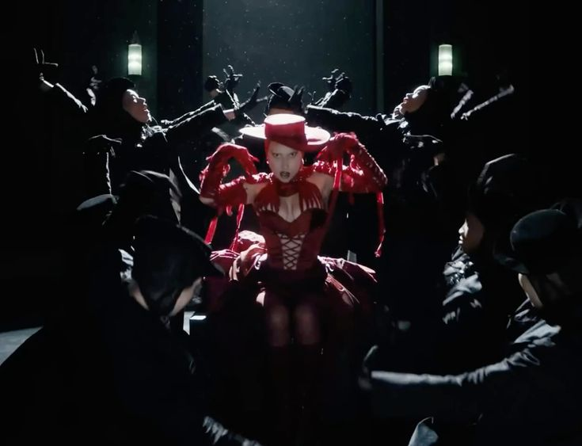
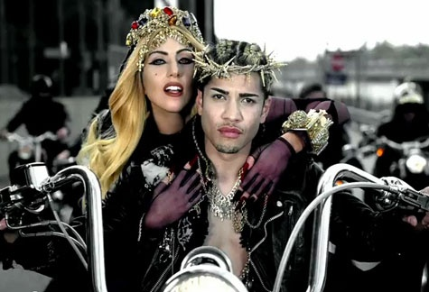
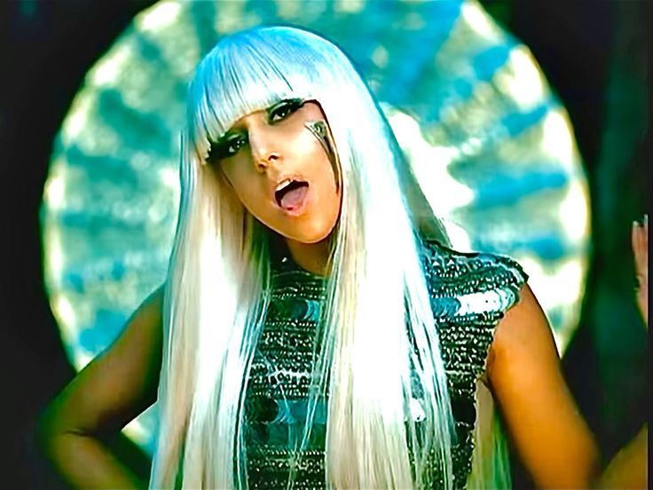
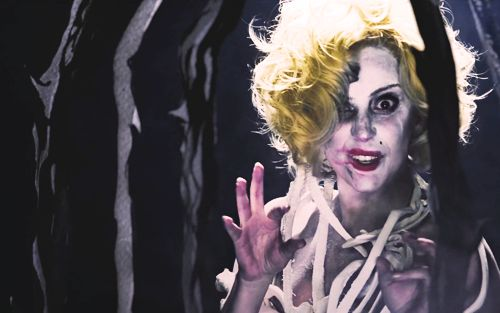
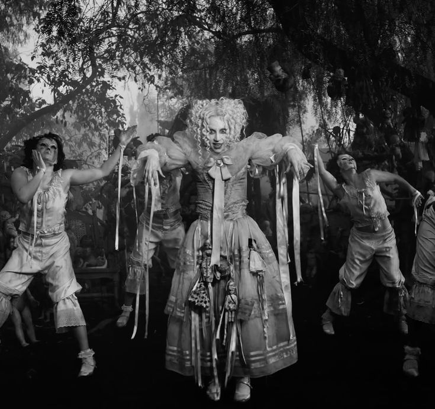
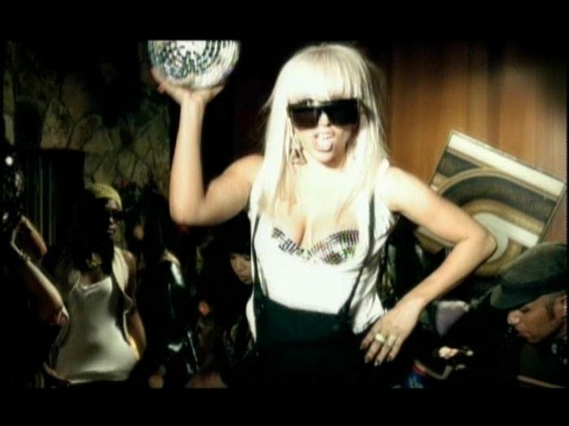
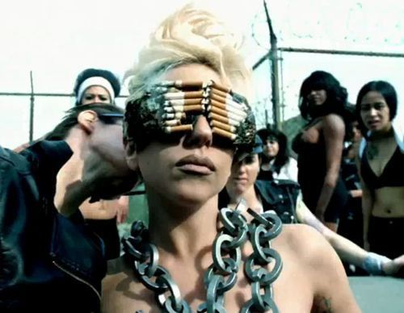
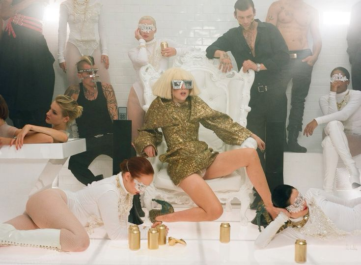
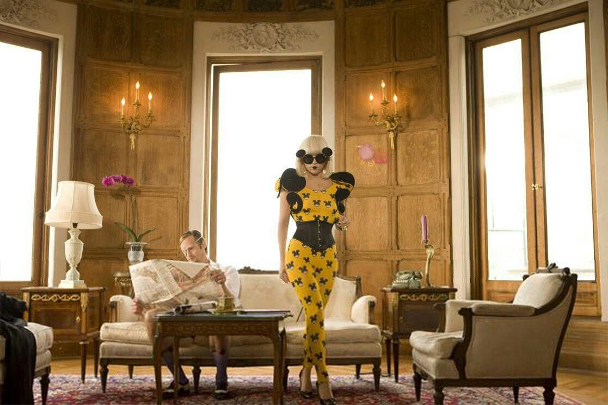

Sobre a Lady Gaga!
Lady Gaga é uma das artistas mais influentes do pop contemporâneo, conhecida por sua criatividade, versatilidade e forte presença artística. Desde o início de sua carreira, ela se destacou por misturar música, moda e performance de maneira inovadora, criando uma identidade única no cenário musical. Seus álbuns trouxeram sucessos que marcaram gerações, explorando temas como liberdade, autoexpressão e aceitação. Além de sua música, Lady Gaga também influenciou o pop com seus visuais ousados e apresentações impactantes, quebrando padrões e incentivando outros artistas a serem mais autênticos. Sua capacidade de se reinventar ao longo dos anos, transitando entre diferentes estilos musicais, contribuiu para sua relevância contínua na indústria. Gaga também utiliza sua plataforma para defender causas sociais importantes, fortalecendo ainda mais sua conexão com o público. Seu impacto no pop vai além das músicas, moldando tendências culturais e artísticas globalmente.
Abracadabra

Judas

Poker Face

Applause

The Dead Dance

Just Dance

Telephone

Bad Romance

Paparazzi
